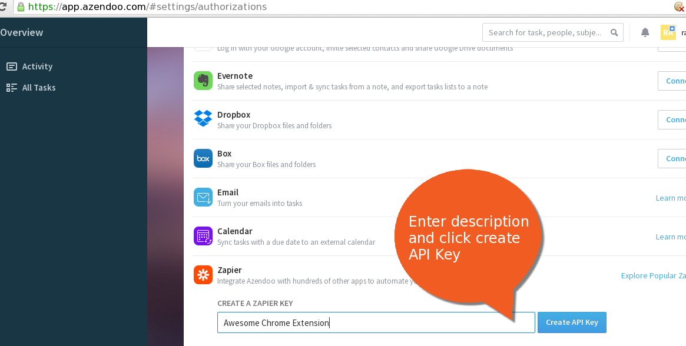

# Tab to Task for Azendoo Options
## Instructions
1. Go to
https://app.azendoo.com/#settings/authorizations
2. Get yours API KEY (or Zapier key) as in screenshot below

3. Put your Api Key in here:
4. click submit
(5. you can now close this page)
## Sources
https://github.com/RaphaelAudet/az_tab2task